Facts:
• Menos de un tercero de los edificios del campus principal de Kalamazoo College tienen ascensores.
• Solo hay 24 lugares de estacionamiento accesibles para discapacitados en el campus principal de Kalamazoo College.
• De las seis residencias estudiantiles del Kalamazoo College, solo dos son accesibles para sillas de ruedas.
Por qué creemos que Kalamazoo College necesita más apoyo para personas con discapacidad:
La Accesibilidad en Kalamazoo College surgió por nuestra examinación de la estructura de Kalamazoo College y la inclusión de estudiantes en campus por la accesibilidad. Descubrimos que mucho del campus no es accesible por la falta de rampas, puertas automáticas y ascensores. Por eso, creamos un proyecto detallado sobre la accesibilidad del campus; cómo funciona, los limitaciónes, y más recursos porque queremos que nuestra comunidad sea informada y que las personas con discapacidades no son olvidados o ignorados en nuestra comunidad. Queremos hacer cambios en el campus de Kalamazoo college, esperamos que este proyecto influya a la comunidad de K y la facultad para hacer el campus más accesible para cada persona.
Imágenes que ilustran ejemplos de cómo se puede mejorar la infraestructura de accesibilidad en Kalamazoo College:
Si crees que hay otros ejemplos que deberían subir aquí, envíe un correo electrónico a john.oneill23@kzoo.edu. Incluye imágenes y una descripción de cómo se puede mejorar la infraestructura.
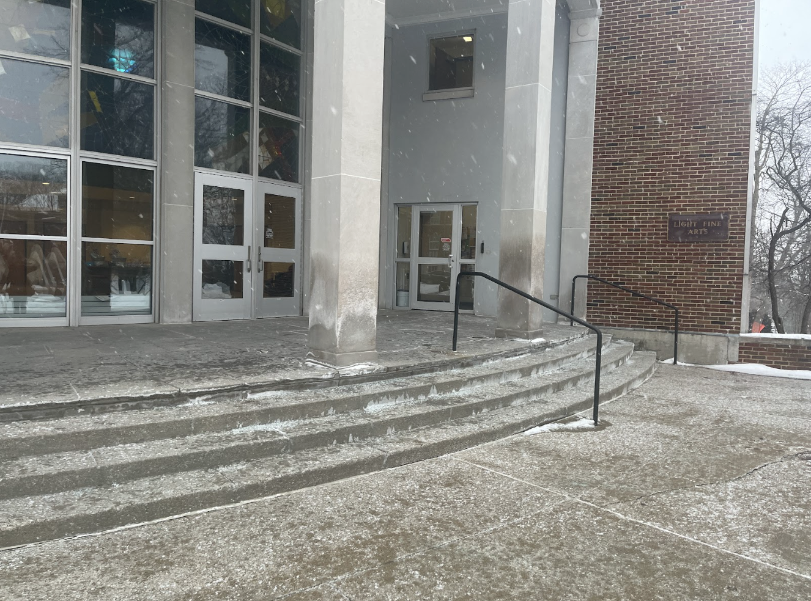
Esta foto muestra las puertas automáticas del Edificio de Bellas Artes (FAB). Estas puertas se encuentran en el primer nivel, en la parte trasera del edificio, y dan acceso al estacionamiento compartido con Dow. A la derecha, la foto muestra las puertas principales que conectan con el vestíbulo y las escaleras del interior del FAB. Se accede a estas puertas mediante escaleras. Si bien este edificio es accesible, no incluye rampas ni puertas automáticas en la entrada principal.
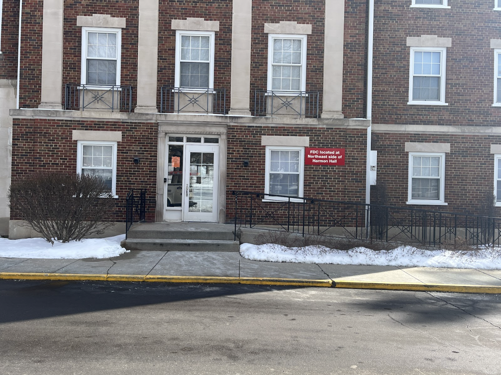
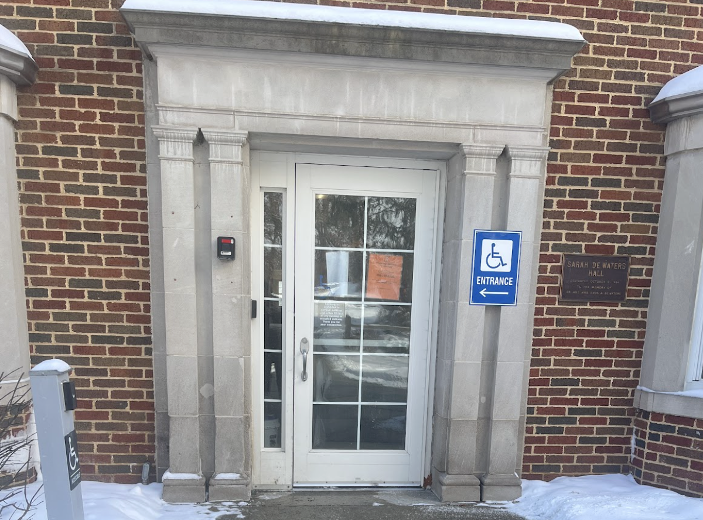
Estas fotos muestran los dos dormitorios disponibles para estudiantes con discapacidades. Hobin, en la foto de la izquierda, tiene una rampa que conduce a una puerta automática con acceso al primer piso a dormitorios accesibles. Hobin es un dormitorio solamente para estudiantes del primer año. De Waters, en la foto de la derecha, tiene aceras desde el estacionamiento de Trowbridge/Dewaters hasta el dormitorio de De Waters. Tiene puertas automáticas en el segundo piso y los dormitorios disponibles para estudiantes discapacitados. Ninguno de estos dormitorios tiene ascensores, sin embargo, todavía hay acceso a un área de la cocina.
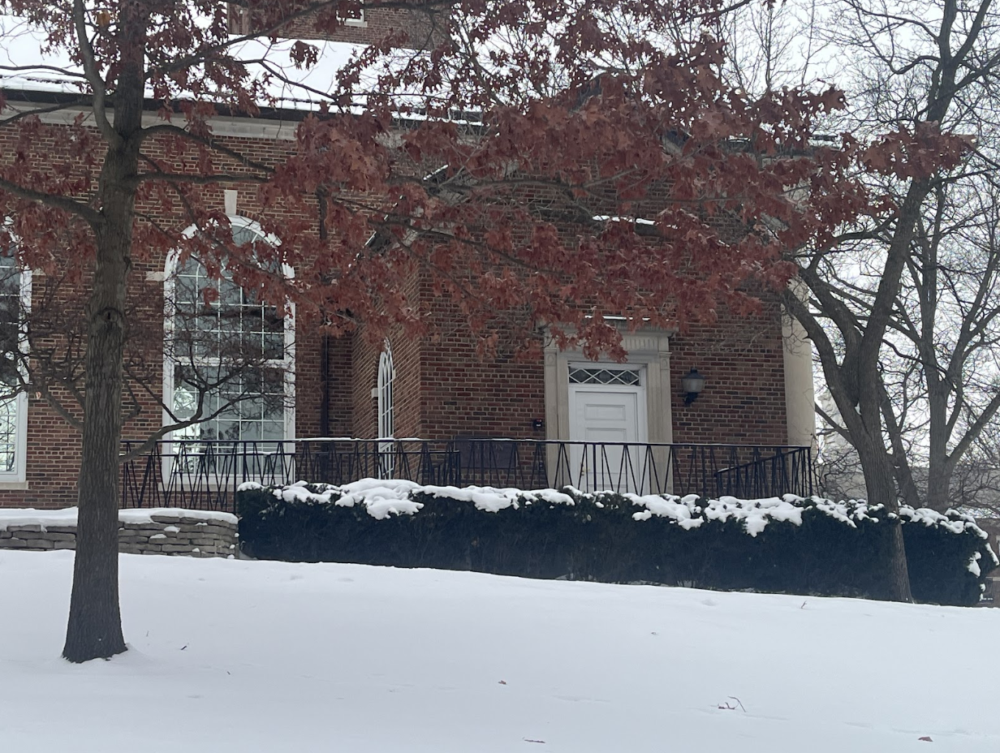
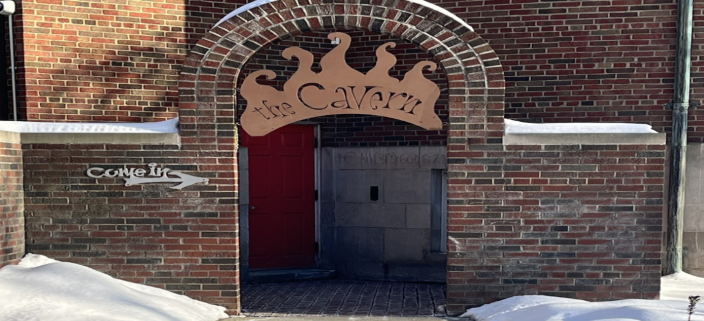
Ambas fotos a la izquierda muestran la misma entrada de la Capilla, para indicar la rampa a la que pueden acceder la entrada accesible, que está del lado izquierdo de la entrada principal de la Capilla. La capilla, desafortunadamente, no tiene un ascensor para acceder a la Caverna que está en el sótano. La Caverna está mostrada en la foto abajo, hay escaleras inmediatamente a la entrada.
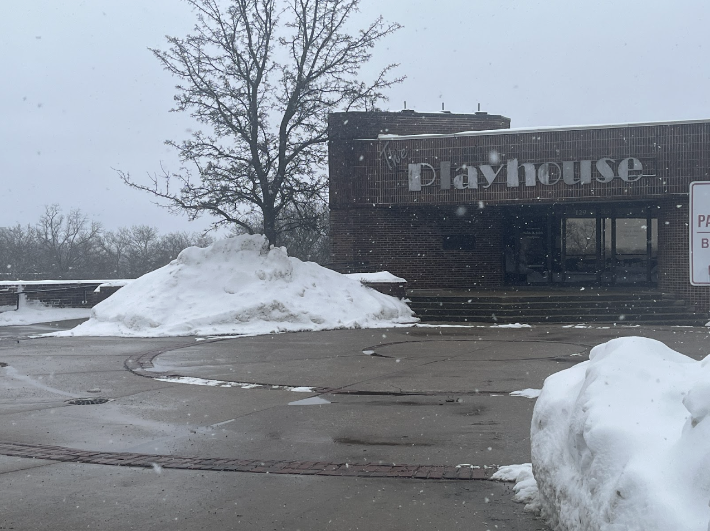
Esta foto muestra la entrada al Festival Playhouse, a la que se accede mediante rampa y escaleras. Sin embargo, no hay puertas automáticas, lo que facilitaría no solo a las personas con discapacidad, sino también a cualquier persona que necesite asistencia.
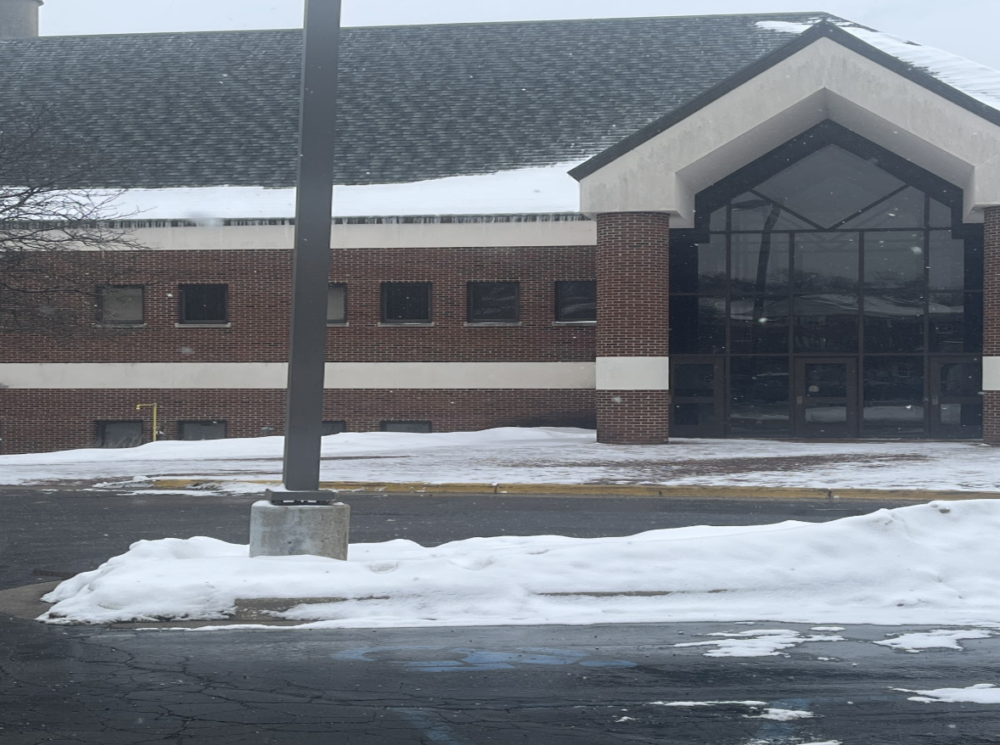
Esta imagen muestra las puertas que conducen al Centro de Ciencias Dow (las más utilizadas para entrar al edificio), que también son las más cercanas al estacionamiento, entre Dow y el Edificio de Bellas Artes. Estas puertas también conducen al ascensor del edificio y a las escaleras de dos niveles. Hay rampas frente a Dow desde el estacionamiento hasta la acera. Sin embargo, el edificio no tiene puertas automáticas para entrar.
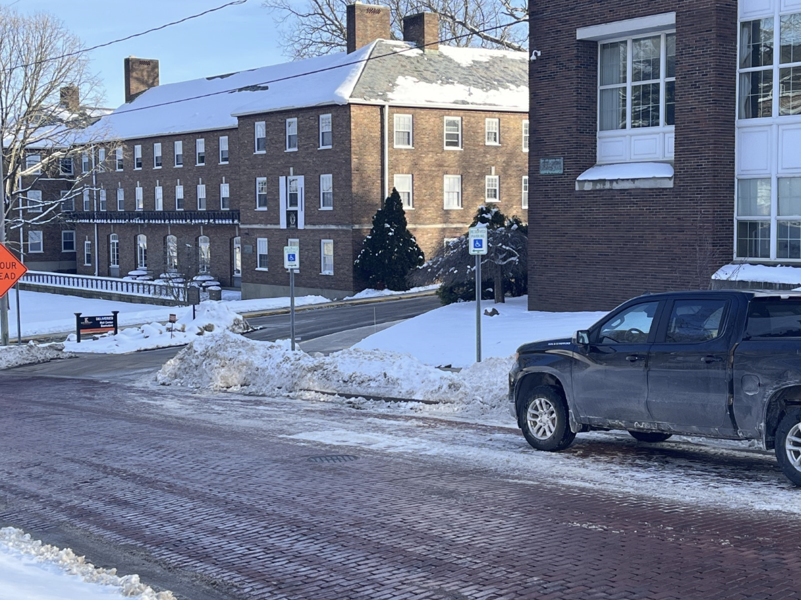
Esta foto muestra dos de los estacionamientos accesibles disponibles en Academy Street. La nieve caída ha formado un montículo en el césped junto a la acera. La única forma de salir del auto y llegar a un edificio sería por la calle. Esto puede poner en riesgo a las personas con discapacidad de ser atropelladas sin un pavimento adecuado.
Última actualización del sitio:
Mensaje de John O'Neill, desarollador del sitio:
Cuando comencé desarollo en este sitio, no sabía tanto sobre desarrollo web. Este sitio web fue creado inicialmente para una clase de SPAN 455 en la que Rylee, Kinga y yo participábamos. Estuve programado en HTML y CSS con lo que sabía y había aprendido en W3 Schools y Google. Sin embargo, ha cambiado drásticamente mi conocimiento de programación. debajo, incluyo los cambios realizados a lo largo de la historia de este sitio.
Actualización Inicial - 8o de Marzo, 2025:
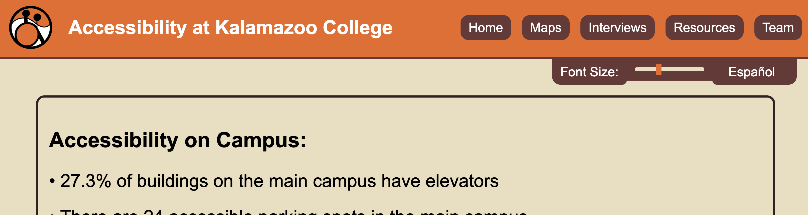
• Sitio publicado bajo accessibilityatkcollege.org utilizando servicios de nombre de dominio de namecheap.com
• Servicios de alojamiento proporcionados por Github
• Todavía faltando soporte móvil
Pruebas Móviles - 4o de Agosto, 2025:
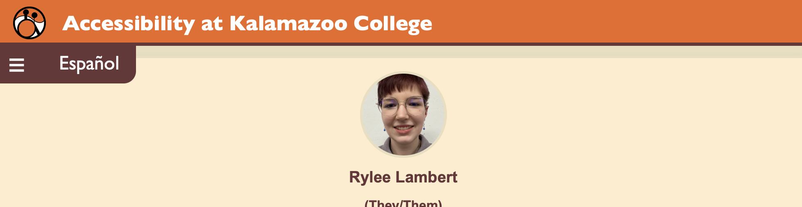
• Empecé a probar la configuración móvil para la página 'Equipo'
• Rediseño inicial del diseño
Versión Dos Terminado - February 21st, 2026:
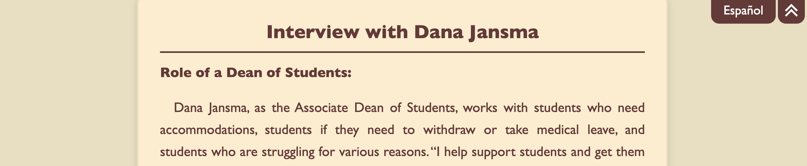
• Compatibilidad móvil completa entre sitios
• Rediseño completo del diseño